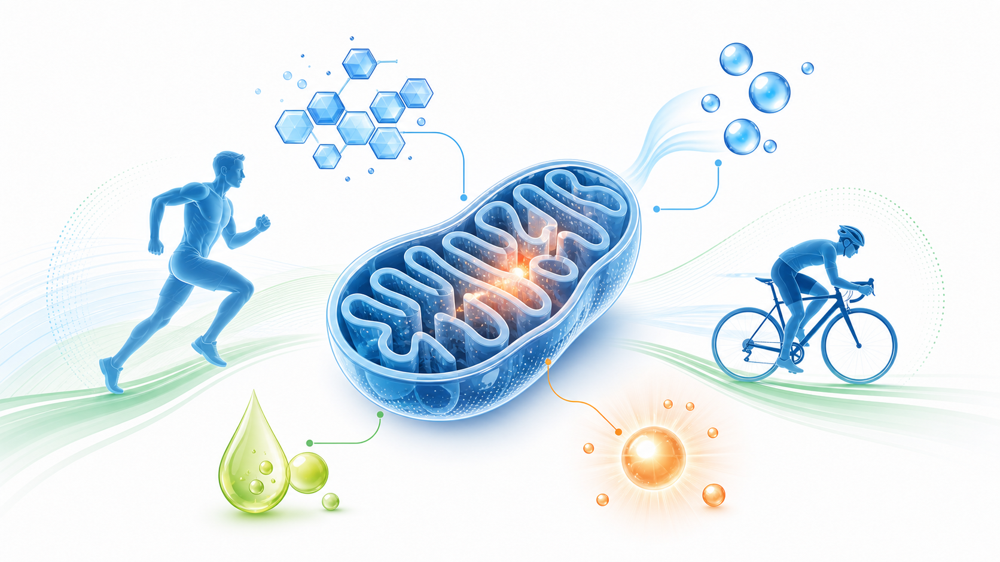
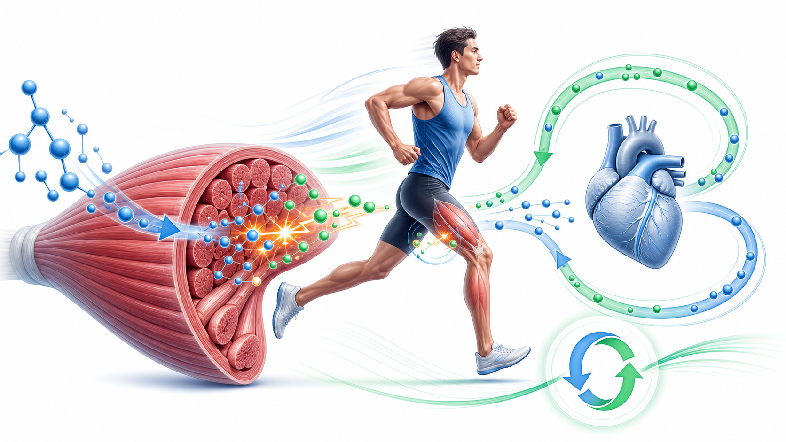
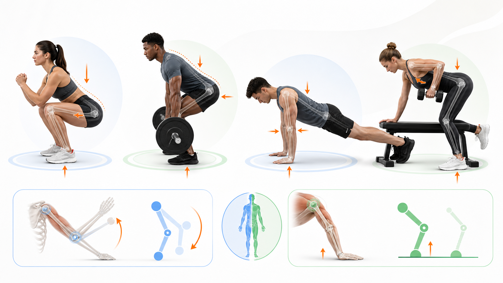
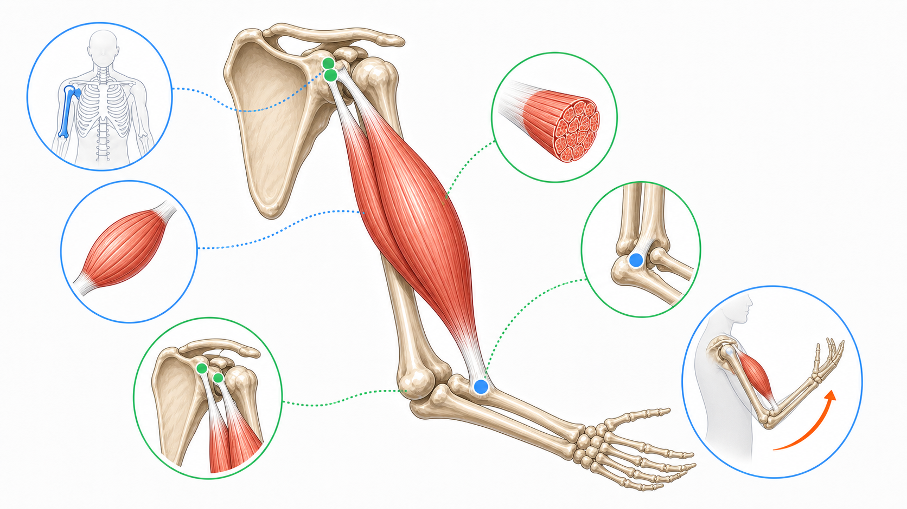

Day 24 · 能量系统-氧化系统

氧化系统负责 2 分钟以上、低到中等强度为主的持续供能。它在线粒体里用糖、脂肪和少量蛋白质慢慢榨出大量 ATP，是长跑、骑行和稳定有氧的底盘。
判断题干时抓三个线索: 时间更长、强度更稳、线粒体和脂肪氧化更突出。氧气不是“背景音”，它是电子传递链能持续跑下去的关键。
打开 Day24 原学习页 →
氧化系统负责 2 分钟以上、低到中等强度为主的持续供能。它在线粒体里用糖、脂肪和少量蛋白质慢慢榨出大量 ATP，是长跑、骑行和稳定有氧的底盘。
判断题干时抓三个线索: 时间更长、强度更稳、线粒体和脂肪氧化更突出。氧气不是“背景音”，它是电子传递链能持续跑下去的关键。
打开 Day24 原学习页 →



今日新知识 Day24：氧化系统最适合哪类运动情境？
今日新知识 Day24：为什么氧气对氧化系统这么关键？
Day23：400 米跑后段为什么会越来越难维持速度？
Day21：同样重量，为什么杠铃离身体越远越难？
Day17：为什么引体向上要用“闭链反向分析”？
Day10：胸大肌名字和功能各给你什么线索？
综合：客户做 60 分钟骑行，20 分钟后开始掉速。按情况分开讨论，你先看哪一类问题？
综合：客户做 12 次接近力竭深蹲，为什么不该只盯氧化系统？
| 易错点 | 错因 | 修正句 |
|---|---|---|
| 把氧化系统等同“慢跑系统” | 把低强度误当唯一场景。 | 氧化系统一直参与供能，只是长时间、可持续输出时更占主导。 |
| 把乳酸当废物 | 把灼烧感、酸痛和乳酸混成一团。 | 乳酸可再利用，延迟性酸痛更多和微损伤、炎症反应有关。 |
| 只看重量，不看力臂 | 忘了力矩公式。 | 轻重量也能因姿势差和力臂变长，变成高难度动作。 |
| 闭链动作仍按开链硬背 | 没看远端是否固定。 | 远端固定时，身体常是向固定端移动，要反向分析。 |